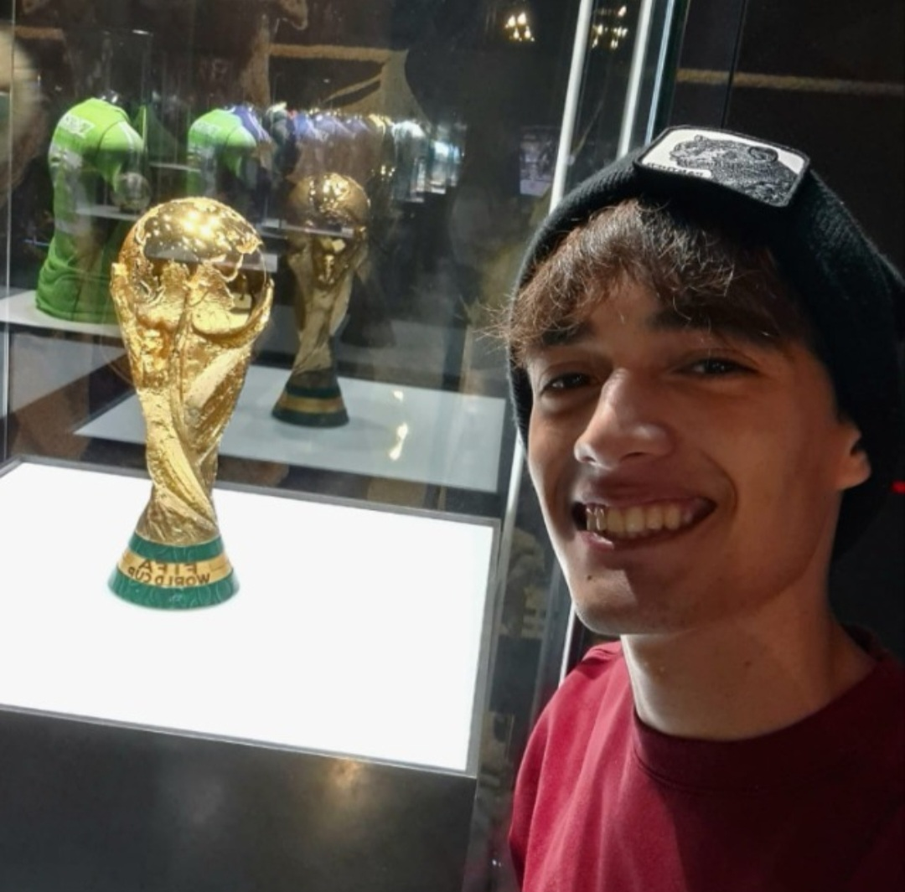

Naci en La Plata, ciudad en la que creci y vivo hasta el dia de hoy. Soy estudiante de zoologia en la Facultad de Ciencias Naturales y Museo, y ademas estudio Diseño Multimedial en la FDA. Como buen platense soy hincha de Estudiantes de la Plata y fanatico de Messi, en mis tiempo libres suelo jugar videojuegos o tomar unos mates, siempre amargos.
Un saludo!